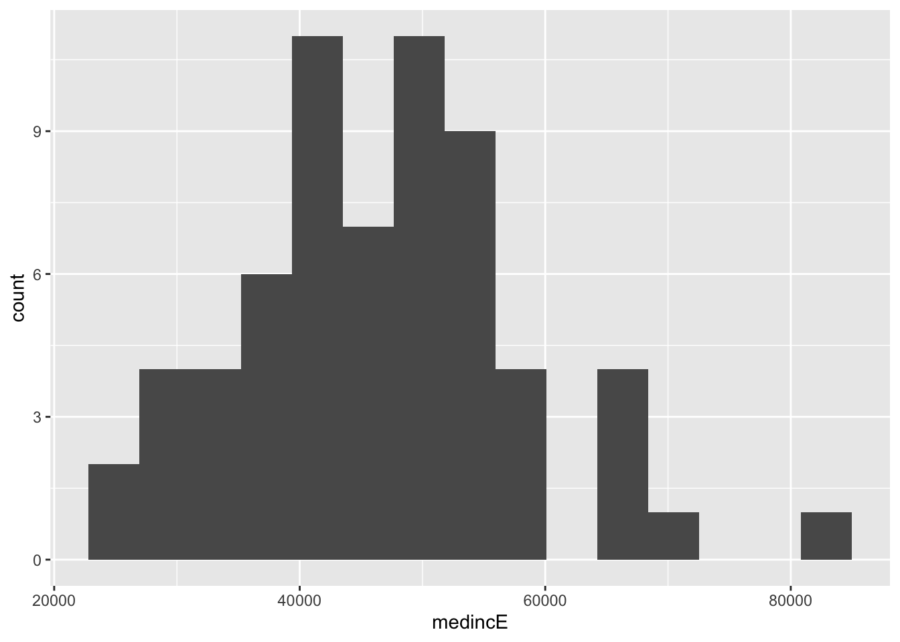
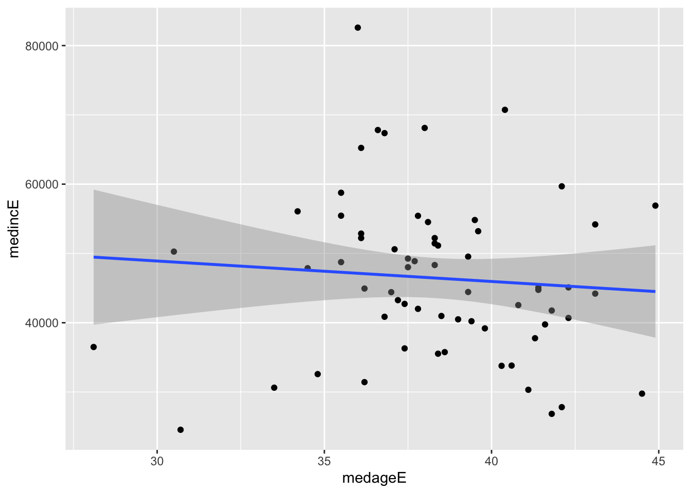

library(plyr)
library(tidycensus)
library(tidyverse)
census_api_key("12efa59339e5a00a910f77f2e691309ae70e1d1b") #replace this with your key2 Web architecture
Dani Arribas-Bel
Lecture: The Web’s architecture and Economy
Lab: What do APIs actually do? (non-spatial APIs)
2.1 Lecture
Slides can be downloaded here
2.2 Lab: What do APIs actually do?
In this lab, we will unpack how Application Programming Interfaces (“APIs”) work and we cover the basics of accessing an API using R. Instead of downloading a data set, APIs allow programmers, statisticians (or students) to request data directly from a server to a local machine. When you work with web APIs, two different computers — a client and server — will interact with each other to request and provide data, respectively.
2.2.1 RESTful Web APIs are all around you.
Web APIs
Allow you query a remote database over the internet
Take on a variety of formats
Adhere to a particular style known as Representation State Transfer or REST (in most cases)
RESTful APIs are convenient because we use them to query database using URLs
Consider a simple Google search:

Ever wonder what all that extra stuff in the address bar was all about? In this case, the full address is Google’s way of sending a query to its databases requesting information related to the search term liverpool top attractions.
In fact, it looks like Google makes its query by taking the search terms, separating each of them with a +, and appending them to the link https://www.google.com/#q=. Therefore, we should be able to actually change our Google search by adding some terms to the URL:

Learning how to use RESTful APIs is all about learning how to format these URLs so that you can get the response you want.
2.2.2 Group activity
Get into groups of 5 or 6 students. Using your friend the internet, look up answers to the following questions. Each group will be assigned one question and asked to present their findings in 5 min to discuss with the entire class.
What is a
URLand how can it help us query data? What is a response status and what are the possible categories?What is a
GETrequest? How does aGETrequest work?What are API keys and how do you obtain them? What kinds of restrictions to they impose on users? Find an example of an API key, what does it look like?
(For 2 groups) More and more APIs pop up every day. Do a bit of quick research and find 2 different examples of APIs that you would be interested in using. 2 groups, 2 or 3 APIs each.
2.2.3 API R libraries
There are two ways to collect data through APIs in R:
Plug-n-play packages. Many common APIs are available through user-written R Packages. These packages offer functions that conveniently “wrap” API queries and format the response. These packages are usually much more convenient than writing our own query, so it is worth searching for a package that works with the API we need.
Writing our own API request. If no wrapper function is available, we have to write our own API request and format the response ourselves using R. This is tricky, but definitely doable.
2.2.4 Pair activity
Some R packages “wrap” API queries and format the response. Lucky us! In pairs, let’s have a look at tidycensus. You can also have a look at the different APIs available from the United States Census Bureau.
tidycensus is
- R package first released in mid-2017
- Allows R users to obtain decennial Census and ACS data pre-formatted for use with with tidyverse tools (dplyr, ggplot2, etc.)
- Optionally returns geographic data as simple feature geometry for common Census geographies
Create a new R-markdown and save it to something you’ll remember, like web_mapping_lab_02.Rmd. To get started working, load the package along with the tidyverse and plyr packages, and set you Census API key. A key can be obtained from http://api.census.gov/data/key_signup.html.
Variables in tidycensus are identified by their Census ID, e.g. B19013_001
Entire tables of variables can be requested with the table argument, e.g. table = “B19001”
Users can request multiple variables at a time, and set custom names with a named vector
Searching for variables Getting variables from the US American Community Survey (ACS) 5-Year Data (2016-2020) requires knowing the variable ID - and there are thousands of these IDs across the different files. To rapidly search for variables, use the load_variables() function. The function takes two required arguments: the year of the Census or endyear of the ACS sample, and the dataset name, which varies in availability by year. For the ACS, use either “acs1” or “acs5” for the ACS detailed tables, and append /profile for the Data Profile and /subject for the Subject Tables. To browse these variables, assign the result of this function to a variable and use the View function in RStudio. An optional argument cache = TRUE will cache the dataset on your computer for future use.
view_vars <- load_variables(2020, "acs5", cache = TRUE)
view(view_vars)EXERCISE - In your pairs explore some of the different variables available in the 5-Year ACS (2016-2020). Make a note of 3 variables you would be interested in exploring. The ACS2 variables page might also help.
income <- get_acs(geography = "state", table = "B19001") #getting income data by state
income# A tibble: 884 × 5
GEOID NAME variable estimate moe
<chr> <chr> <chr> <dbl> <dbl>
1 01 Alabama B19001_001 1888504 5749
2 01 Alabama B19001_002 153635 2979
3 01 Alabama B19001_003 105415 2397
4 01 Alabama B19001_004 106327 2522
5 01 Alabama B19001_005 100073 2674
6 01 Alabama B19001_006 100569 3023
7 01 Alabama B19001_007 96815 2745
8 01 Alabama B19001_008 87120 2491
9 01 Alabama B19001_009 86181 2124
10 01 Alabama B19001_010 75721 2512
# … with 874 more rowsEXERCISE - 1) What is a tibble? 2) Discuss the format of the data obtained with your partner and then use the function get_acs to explore the 3 variables you discussed in the previous exercise.
You can also get “wide” census data:
inc_wide <- get_acs(geography = "state", table = "B19001", output = "wide")
inc_wide# A tibble: 52 × 36
GEOID NAME B1900…¹ B1900…² B1900…³ B1900…⁴ B1900…⁵ B1900…⁶ B1900…⁷ B1900…⁸
<chr> <chr> <dbl> <dbl> <dbl> <dbl> <dbl> <dbl> <dbl> <dbl>
1 42 Pennsy… 5.11e6 8064 296733 3893 206216 3771 223380 3598
2 06 Califo… 1.31e7 18542 614887 6699 507398 5286 435382 5251
3 54 West V… 7.34e5 2810 62341 2318 43003 1497 45613 1648
4 49 Utah 1.00e6 2384 36211 1536 27395 1378 28460 1507
5 36 New Yo… 7.42e6 12559 471680 6161 340614 4703 303901 4201
6 11 Distri… 2.88e5 1319 24083 1442 11315 809 8300 842
7 02 Alaska 2.55e5 1326 9818 613 7476 651 8007 633
8 12 Florida 7.93e6 23200 494959 6755 329848 4816 354967 5030
9 45 South … 1.96e6 5748 144667 3397 93868 2582 94132 2606
10 38 North … 3.21e5 1737 18120 846 12664 795 12611 874
# … with 42 more rows, 26 more variables: B19001_005E <dbl>, B19001_005M <dbl>,
# B19001_006E <dbl>, B19001_006M <dbl>, B19001_007E <dbl>, B19001_007M <dbl>,
# B19001_008E <dbl>, B19001_008M <dbl>, B19001_009E <dbl>, B19001_009M <dbl>,
# B19001_010E <dbl>, B19001_010M <dbl>, B19001_011E <dbl>, B19001_011M <dbl>,
# B19001_012E <dbl>, B19001_012M <dbl>, B19001_013E <dbl>, B19001_013M <dbl>,
# B19001_014E <dbl>, B19001_014M <dbl>, B19001_015E <dbl>, B19001_015M <dbl>,
# B19001_016E <dbl>, B19001_016M <dbl>, B19001_017E <dbl>, …Let’s make our query a bit more precise. We are going to query data on median household income and median age by county in the state of New York from the 2016-2020 ACS.
ga_wide <- get_acs(
geography = "county",
state = "Louisiana",
variables = c(medinc = "B19013_001",
medage = "B01002_001"),
output = "wide",
year = 2020
)Let’s plot one of our variables. By default, ggplot organizes the data into 30 bins; this option can be changed with the bins parameter.
ggplot(ga_wide, aes(x = medincE)) +
geom_histogram(bins = 15) #argument bins = 15 in our call to geom_histogram()
We can also easily explort correlations between variables. The geom_point() function, which plots points on a chart relative to X and Y values for observations in a dataset. This requires specification of two columns in the call to aes().
ggplot(ga_wide, aes(x = medageE, y = medincE)) +
geom_point() +
geom_smooth(method = "lm")
EXERCISE - In your pairs, modify the state, vairables and year parametres in your get_acs function and produce some other simple scatter plots (cloud of points) that suggest correlations between your variables of interest.
You can also directly map data you have queried in tidycensus. We will look at this in future sessions. For a complete overview of tidycensus please see Analyzing US Census Data: Methods, Maps, and Models in R.
2.2.4.1 Our own API request
The R libraries that are often used for APIs are httr and jsonlite. They serve different roles in our introduction of APIs, but both are essential.
JSON stands for JavaScript Object Notation. While JavaScript is another programming language. JSON is useful because it is easily readable by a computer, and for this reason, it has become the primary way that data is transported through APIs. Most APIs will send their responses in JSON format. Using the jsonlite package, you can extract and format data into an R dataframe. JSON is a structure formatted with a key (for example, a variable name id) and a value (BikePoints_308). We used the function fromJSON to transform the API request content into a useable dataframe.
We will request the locations of all the hire bike stations in London from the Transport for London API. We use the GET function from httr package.The GET() function requires a URL, which specifies the server’s address to which the request needs to be sent.
library(httr)
library(jsonlite)
#key <- "YOURKEY HERE"
request <- GET("https://api.tfl.gov.uk/BikePoint/") # Here we request all the bike docking stations from the Transport for London APIrequest # Examine outputResponse [https://api.tfl.gov.uk/BikePoint/]
Date: 2023-01-24 12:10
Status: 200
Content-Type: application/json; charset=utf-8
Size: 2.16 MBrequest$status_code # The response status is 200 for a successful request[1] 200Most GET request URLs for API querying have three or four components:
Authentication Key/Token: A user-specific character string appended to a base URL telling the server who is making the query; allows servers to efficiently manage database access.
Base URL: A link stub that will be at the beginning of all calls to a given API; points the server to the location of an entire database.
Search Parameters: A character string appended to a base URL that tells the server what to extract from the database; basically a series of filters used to point to specific parts of a database.
Response Format: A character string indicating how the response should be formatted; usually one of .csv, .json, or .xml.
bikepoints <- jsonlite::fromJSON(content(request, "text")) # extract the dataframe
names(bikepoints) # Print the column names [1] "$type" "id" "url"
[4] "commonName" "placeType" "additionalProperties"
[7] "children" "childrenUrls" "lat"
[10] "lon" bikepoints$`Station ID` = as.numeric(substr(bikepoints$id, nchar("BikePoints_")+1, nchar(bikepoints$id))) # create new IDAfter Block 3 Data architectures we will have revised spatial data forms and you will easily be able to map data that you have obtained through this API.
## Create an sf object from longitude latitude
library(dplyr)
library(sf)
library(tmap)
# create a sf object
stations_df <- bikepoints %>%
sf::st_as_sf(coords = c(10,9)) %>% # create pts from coordinates
st_set_crs(4326) %>% # set the original CRS
relocate(`Station ID`) # set ID as the first column of the dataframe
# plot bikepoints on a background map for more context
tmap_mode("view")
tm_basemap() +
tm_shape(stations_df) +
tm_symbols(id = "commonName", col = "red", scale = .5)2.2.5 Group activity answers
Uniform Resource Location (
URL) is a string of characters that, when interpreted via the Hypertext Transfer Protocol (HTTP). URLs point to a data resource, notably files written in Hypertext Markup Language (HTML) or a subset of a database1xx informational response - the request was received, continuing process
2xx successful - the request was successfully received, understood, and accepted
3xx redirection - further action needs to be taken in order to complete the request
4xx client error - the request contains bad syntax or cannot be fulfilled
5xx server error - the server failed to fulfil an apparently valid request
GETrequests a representation of a data resource corresponding to a particularURL. The process of executing theGETmethod is often referred to as aGET requestand is the main method used for querying RESTful databases.HEAD,POST,PUT,DELETE: other common methods, though mostly never used for database querying.Surfing the web is basically equivalent to sending a bunch of
GETrequests to different servers and asking for different files written inHTML. Suppose, for instance, I wanted to look something up on Wikipedia. Your first step would be to open your web browser and type in http://www.wikipedia.org. Once you hit return, you would see the page below. Several different processes occured, however, between you hitting “return” and the page finally being rendered:The web browser took the entered character string, used the command-line tool “Curl” to write a properly formatted
HTTP GETrequest, and submitted it to the server that hosts the Wikipedia homepage.After receiving this request, the server sent an
HTTPresponse, from whichCurlextracted the HTML code for the page (partially shown below).The raw
HTMLcode was parsed and then executed by the web browser, rendering the page as seen in the window.Most APIs requires a key or other user credentials before you can query their database. Getting credentialised with a API requires that you register with the organization. Once you have successfully registered, you will be assigned one or more keys, tokens, or other credentials that must be supplied to the server as part of any API call you make. To make sure users are not abusing their data access privileges (e.g., by making many rapid queries), each set of keys will be given rate limits governing the total number of calls that can be made over certain intervals of time.
Most APIs requires a key before you can query their database. This usually requires you to register with the organization. Most APIs are set up for developers, so you will likely be asked to register an “application.” All this really entails is coming up with a name for your app/bot/project and providing your real name, organization, and email. Note that some more popular APIs (e.g., Twitter, Facebook) will require additional information, such as a web address or mobile number. Once you have registered, you will be assigned one or more keys, tokens, or other credentials that must be supplied to the server as part of any API call you make. Most API keys limits he total number of calls that can be made over certain intervals of time. This is so users do not busing their data access privileges.
2.3 References
- Brief History of the Internet, by the Internet Society, is a handy (and free!) introduction to how it all came to be.
- Haklay, M., Singleton, A., Parker, C. 2008. “Web Mapping 2.0: The Neogeography of the GeoWeb”. Geography Compass, 2(6):2011–2039
- A blog post from Joe Morrison commenting on the recent change of licensing for some of the core software from Mapbox
- Terman, R., 2020. Computational Tools for Social Science
- Walker, K. Analyzing US Census Data: Methods, Maps, and Models in R.